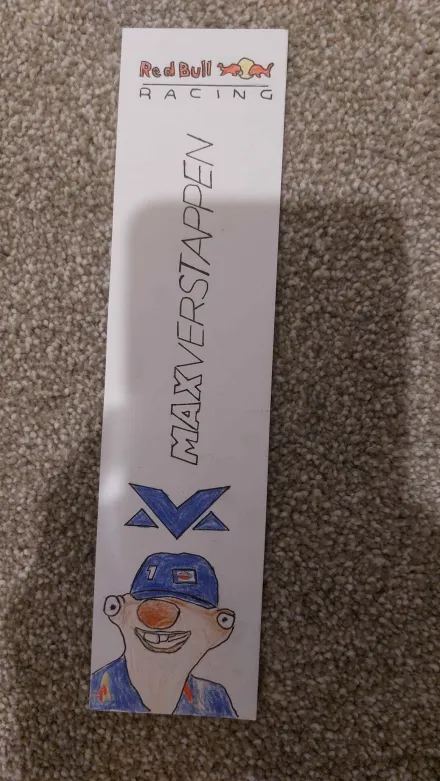
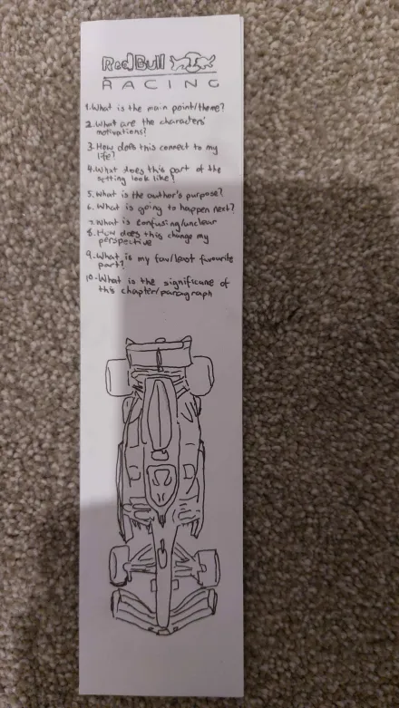
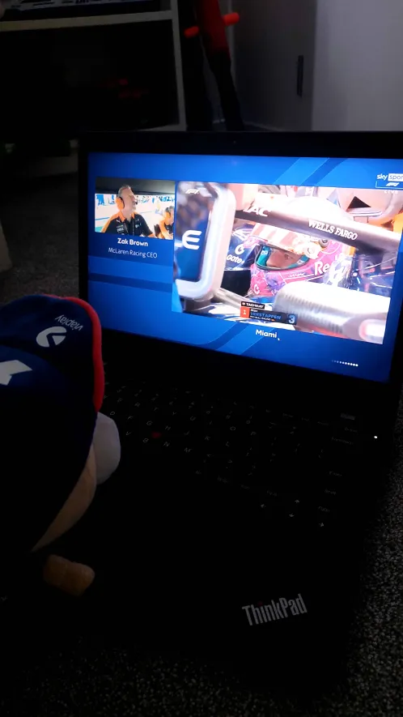

Bookmark Front
A stylised front view of the Max Verstappen collectible bookmark with bold racer energy.
A small visual cabinet of snapshots, renderings and creative detail from the assets collection.
❯ curated for a cohesive portfolio aesthetic.

A stylised front view of the Max Verstappen collectible bookmark with bold racer energy.

The reverse side cleanly balances contrast and motion, matching the portfolio’s dark cyber tone.

A playful piece showing a character watching Verstappen, adding personality to the collection.